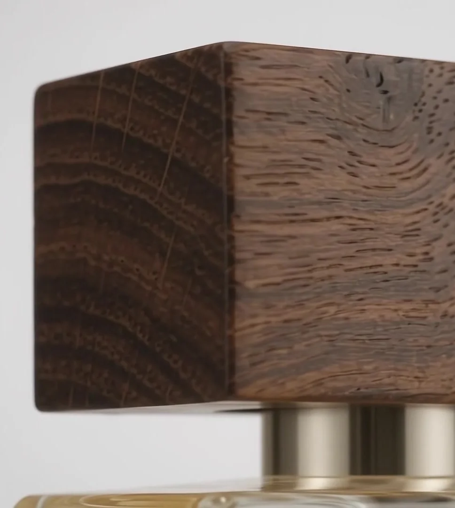

01
The Crown
The crown above the intertwined monogram is our promise: confidence without noise. It is printed on every bottle, a seal rather than a slogan.
FALVIO began with a simple belief: a fragrance should feel as considered in the hand as it is on the skin.
The crown above the intertwined monogram is our promise: confidence without noise. It is printed on every bottle, a seal rather than a slogan.

A clear rectangular body with softened edges and a deep base, designed so that the amber colour of the fragrance becomes part of the design.

Natural wood brings warmth to the cool clarity of glass. Because the grain is natural, no two caps are exactly alike.

Lift the cap, press once, and let the scent settle. FALVIO is made for the moments you choose to mark.